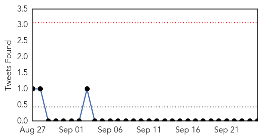
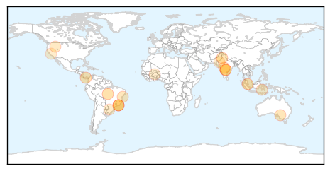
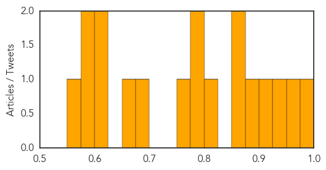

Cholera
30-Day Web Trend
0 alerts, 0 warnings

30-Day Twitter Trend
0 alerts, 0 warnings

Article Locations

Article Confidences

Top Articles:
- 0.998
- WHO responds to health crises facing war-wracked South Sudan - South Sudan
- 0.987
- Ghana, Business Advice, Jobs, News, Business Directory, Real Estate, Finance, Forms, Auto
- 0.803
- High Level Meeting: South Sudan, 69th Session of UN General Assembly
- 0.802
- MSF Secretary General Addresses UN General Assembly on South Sudan
Top Tweets:
-
No tweets found for Sep 25, 2014
Dengue Fever
30-Day Web Trend
6 alerts, 14 warnings

30-Day Twitter Trend
0 alerts, 0 warnings

Article Locations
Article Confidences
Top Articles:
- 0.988
- Travelers warned of dengue risk
- 0.967
- Brazil Unleashes 10K 'Good' Mosquitoes
- 0.930
- but each bloodsucking bug carries bacteria that blocks dengue fever
- 0.915
- Dengue danger
- 0.875
- Aethlon Medical (OTCBB: AEMD) Announces Dengue Virus Treatment Agreement
- 0.859
- ‘Last week of current month is peak dengue season’
- 0.852
- Brazil releases Wolbachia infected mosquitoes to fight dengue
- 0.814
- Brazil Releases 10,000 Mosquitoes to Fight Dengue Fever
- 0.790
- Brazilian biotech firm's GM mosquitoes to fight dengue
- 0.784
- Brazil Releases 10,000 Mosquitoes to Combat Dengue Fever
- 0.761
- Brazil fights dengue with ‘good’ mosquitoes
- 0.696
- Dengue on decline: Health Minister
- 0.675
- Dengue-blocking mosquito released in Brazil
- 0.623
- Here Comes "Good" Mosquitoes To Fight "Evil" Dengue.
- 0.622
- Brazil releases dengue-blocking mosquitoes
- 0.594
- The Many Ways We're Using Mutant Mosquitos to Eradicate Disease
- 0.589
- GHIT Awards Seven New Grants Amounting To US$15.3 Million
- 0.571
- Dengue threat: Samarth Hospital alleges PMC is harassing them
Top Tweets:
- 0.546
- Flavivirus news: 37 dengue cases reported in Trichy - Times of India: 37 dengue cases reported ... http://t.co/y5CERynWzw pathogenposse